Windows keeps the last 25 things you copy and clears them on restart. SweaxClip keeps every one — text, links, code, colors, images, screenshots and files — and brings them back with Win + V. Windows kopyaladığın son 25 şeyi tutar, yeniden başlatınca siler. SweaxClip hepsini saklar — metin, bağlantı, kod, renk, görsel, ekran görüntüsü ve dosya — ve Win + V ile geri getirir.
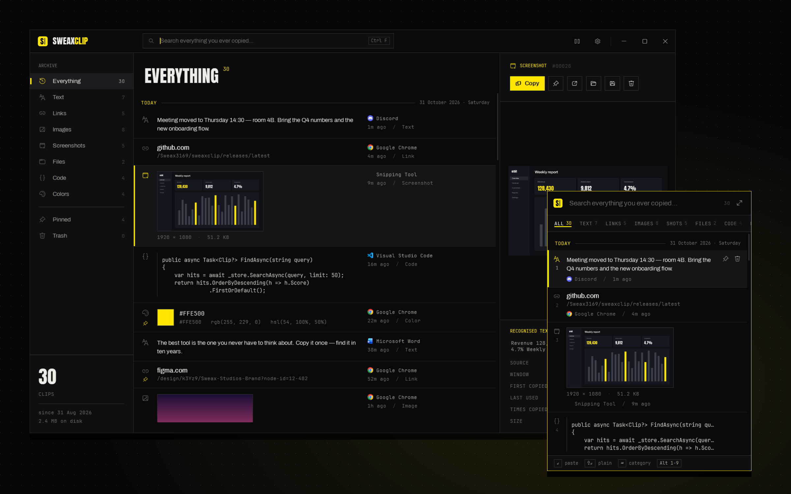
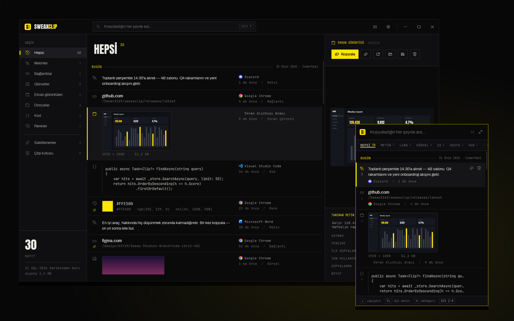
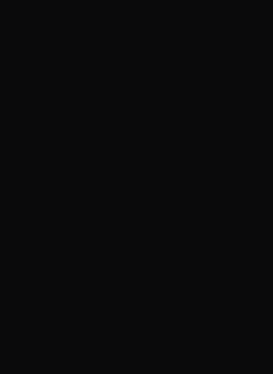
The panel opens next to your text cursor with everything on one timeline. Enter pastes straight into the app you were typing in. Categories are one Tab away; typing searches.
Panel yazı imlecinin yanında açılır, her şey tek zaman çizelgesindedir. Enter, yazdığın uygulamaya doğrudan yapıştırır. Kategoriler bir Tab uzaklıkta; yazmaya başlamak aramaktır.
| Enter | PasteYapıştır |
| Shift Enter | Paste as plain textDüz metin yapıştır |
| Alt 1–9 | Paste the numbered itemNumaralı öğeyi yapıştır |
| Tab ← → | Switch categoryKategori değiştir |
| Ctrl P | PinSabitle |
| Del | Move to trashÇöpe taşı |
| Ctrl E | Open in the libraryKütüphanede aç |
Formatting from Word and browsers is kept and pasted back.
Word ve tarayıcı biçimlendirmesi korunur, aynen yapıştırılır.
Domain and path at a glance; Ctrl O opens.
Alan adı ve yol bir bakışta; Ctrl O açar.
Stored losslessly, any size, never twice.
Kayıpsız, her boyutta, asla iki kez saklanmaz.
Snipping Tool, PrtScn, ShareX — and the whole Screenshots folder.
Ekran Alıntısı, PrtScn, ShareX — ve Ekran görüntüleri klasörünün tamamı.
Copied in Explorer, pasted back as real files.
Gezgin'de kopyalanır, gerçek dosya olarak yapıştırılır.
Recognised by its structure, shown in monospace.
Yapısından tanınır, eşit aralıklı yazıyla gösterilir.
Hex, rgb and hsl with a swatch and every conversion.
Hex, rgb ve hsl; renk örneği ve tüm dönüşümleriyle.
Keepers up top. A trash that only empties when you say so.
Sakladıkların üstte. Sen istemedikçe boşalmayan bir çöp.
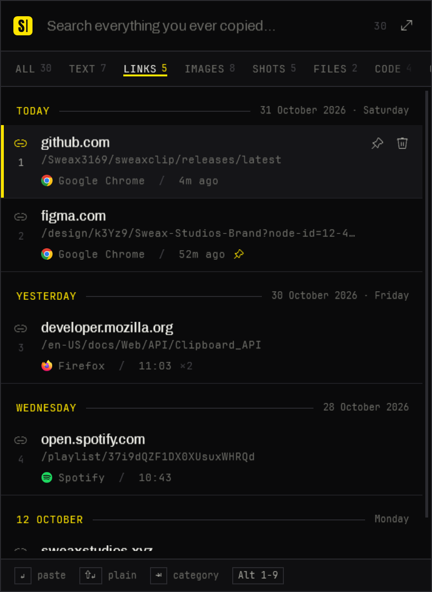
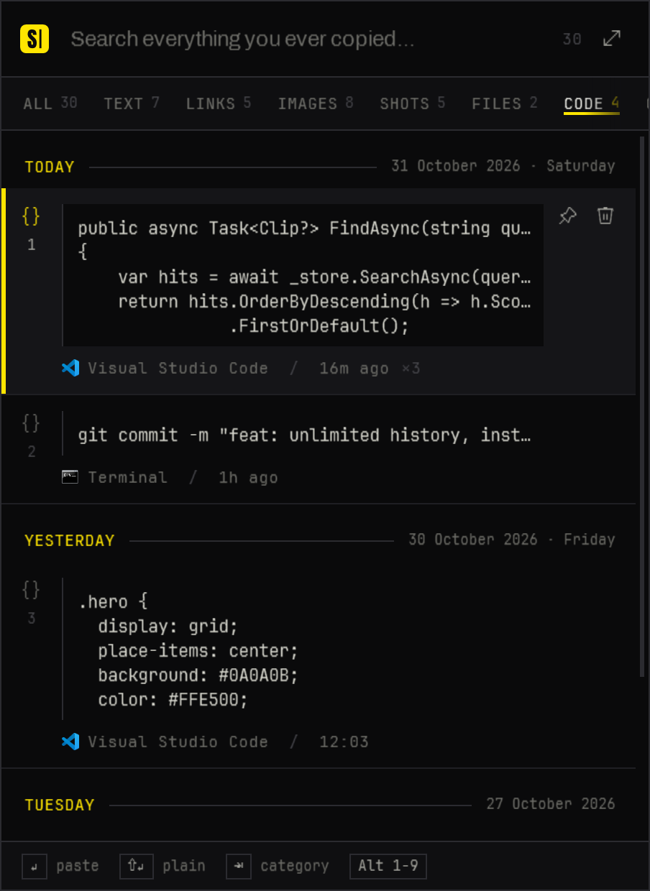
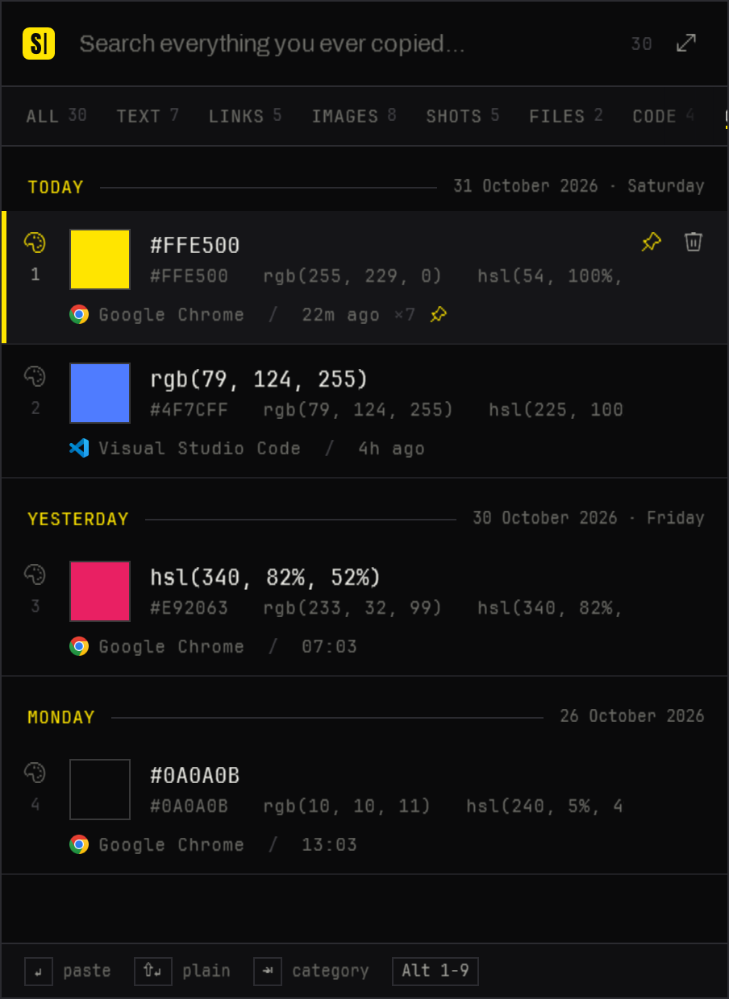
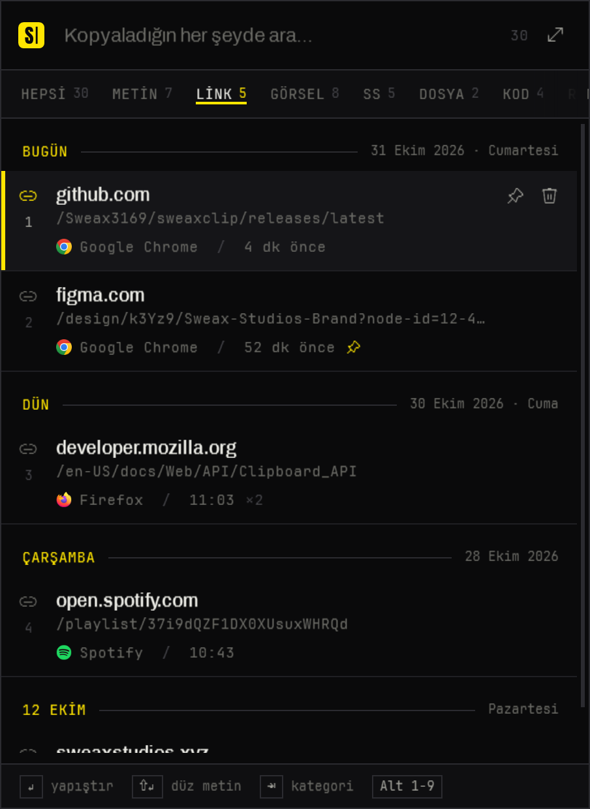
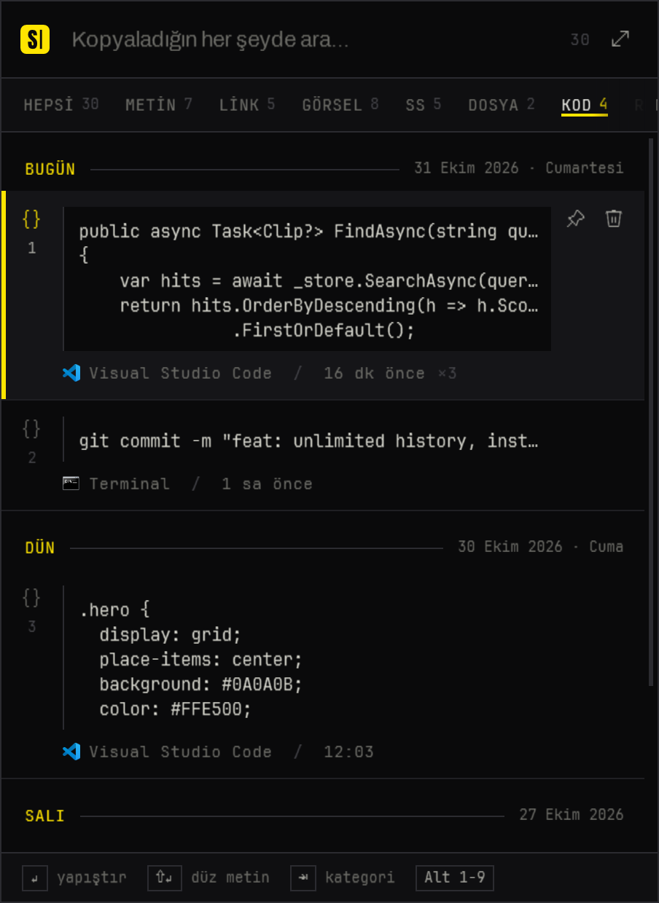
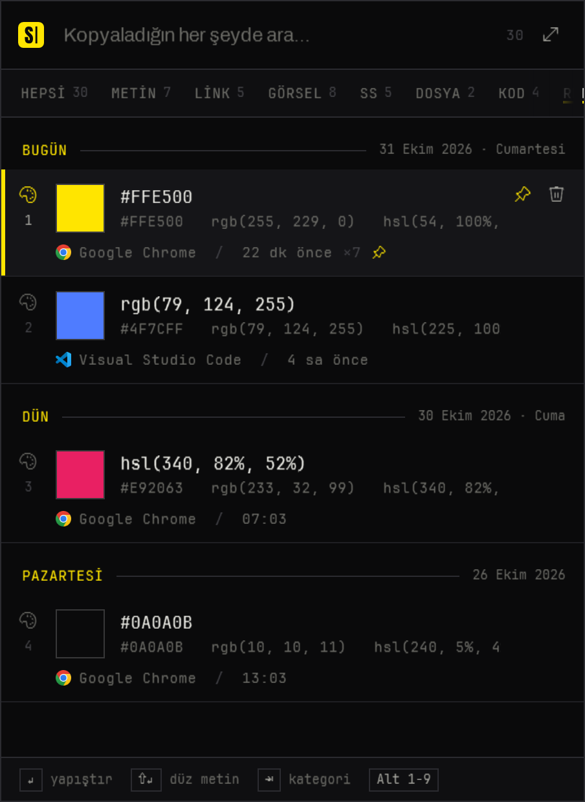
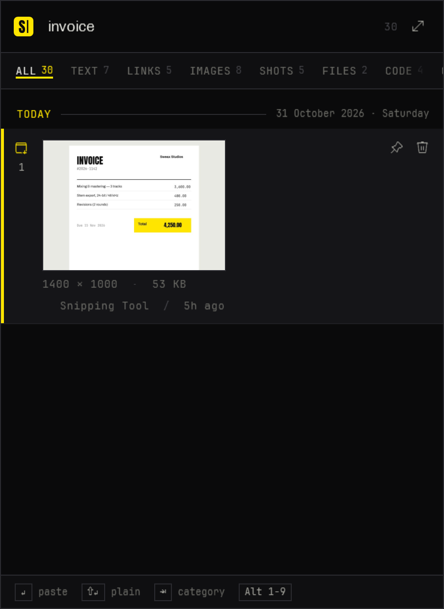
Screenshots are read by the OCR engine that ships with Windows — on your PC, in the background. Type a word that appears inside a picture and the picture comes up.
Ekran görüntüleri Windows'un kendi OCR motoruyla, bilgisayarında, arka planda okunur. Resmin içinde geçen bir kelimeyi yaz, resim karşına gelsin.
Search also covers every clip's text, the source app and the window title. Case and accents don't matter, Turkish letters included: istanbul finds İSTANBUL. Part of a word is enough.
Arama ayrıca her kaydın metnini, kaynak uygulamayı ve pencere başlığını kapsar. Büyük-küçük harf ve aksan fark etmez: istanbul yazınca İSTANBUL bulunur. Kelimenin bir parçası yeter.
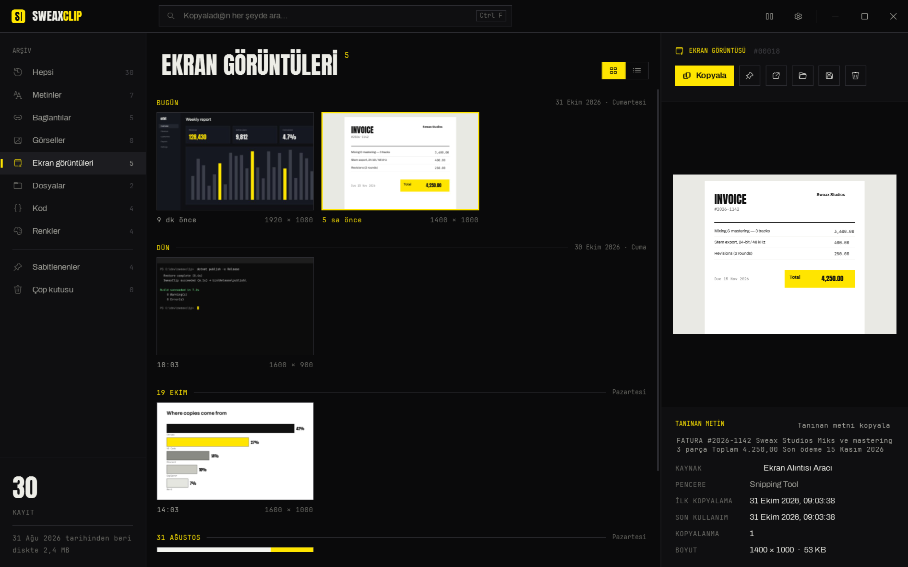
Nothing is deleted automatically — not after 25 items, not after 30 days, not on restart. Everything lives in one SQLite database and a folder of images named by their SHA-256 hash.
Hiçbir şey kendiliğinden silinmez — 25 kayıttan sonra da, 30 günden sonra da, yeniden başlatınca da. Her şey tek bir SQLite veritabanında ve SHA-256 özetiyle adlandırılmış görsel klasöründe durur.
A snapshot of the database is taken every day — the last 7 days and one per month are kept forever. Export the whole archive as a .zip, or run it portable from a USB stick.
Veritabanının her gün yedeği alınır — son 7 gün ve her aydan bir kopya süresiz saklanır. Bütün arşivi .zip olarak dışa aktar ya da USB bellekten taşınabilir çalıştır.
| Windows | SweaxClip | |
|---|---|---|
| Items keptTutulan kayıt | 25 | UnlimitedSınırsız |
| After restartYeniden başlatınca | ClearedSilinir | KeptKalır |
| Image sizeGörsel boyutu | ≤ 4 MB | AnySınırsız |
| SearchArama | — | Full textTam metin |
| Text in imagesGörseldeki yazı | — | OCR |
| CategoriesKategoriler | — | 8 |
| BackupsYedek | — | DailyGünlük |
memory while waiting in the tray
tepside beklerken bellek
CPU while idle — nothing polls
beklerken işlemci — hiçbir şeyi yoklamaz
items, kept across restarts
kayıt, yeniden başlatmalarda da
nothing else to install
kurulacak başka bir şey yok
AddClipboardFormatListener).AddClipboardFormatListener).SweaxClip-win-x64.zip from the latest release, and unzip it.
Son sürümden SweaxClip-win-x64.zip dosyasını indir ve aç.
It installs itself, starts with Windows and imports your existing screenshots.
Kendini kurar, Windows ile başlar ve mevcut ekran görüntülerini içe aktarır.
Everything you copy from now on stays.
Bundan sonra kopyaladığın her şey kalır.
# build from source (.NET 9 SDK) git clone https://github.com/Sweax3169/sweaxclip cd sweaxclip dotnet run --project src/SweaxClip # open the panel from a macro key SweaxClip.exe --toggle